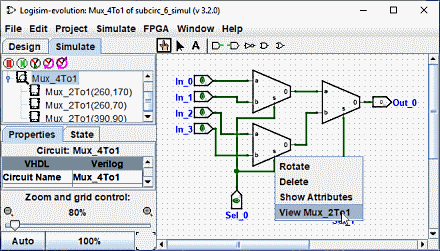

איתור באגים במעגלי משנה
ככל שתבדוק מעגלים גדולים יותר, סביר להניח שתמצא באגים. למסמר מה משתבש, לחקור מה קורה על במעגלי המשנה בזמן הפעלת המעגל הכולל יכול לעזור. כדי להיכנס למצב תת-המעגל, אתה יכול להשתמש כל אחת משלוש טכניקות שונות.
הפשוט ביותר הוא כנראה להציג את היררכיית הסימולציה על ידי לחיצה על הדמיה לשונית, או על ידי בחירה בתפריט | פרויקט |→| הצג את עץ הסימולציה |.
זה מחליף את חלונית הסייר כך שתראה את ההיררכיה של תת-מעגלים המדומים.

לחיצה כפולה על רכיב בהיררכיה זו תציג את מה שקורה בתוך זה תת-מעגל.
הדרך השנייה שבה אתה יכול להיכנס למעגל משנה היא להעלות את התפריט הקופץ שלו על ידי קליק ימני או Ctrl+לחץ עליו, ולאחר מכן בחירה באפשרות | הצג "circuit_name" | .

והדרך השלישית היא קודם כל להבטיח את הכלי Poke ( ) נבחר ולאחר מכן
לחץ על תת-המעגל שאליו ברצונך להיכנס; זכוכית מגדלת תופיע מעל
מרכז המשנה, ולחיצה כפולה על הזכוכית המגדלת תיכנס למעגל המשנה
מדינה.
) נבחר ולאחר מכן
לחץ על תת-המעגל שאליו ברצונך להיכנס; זכוכית מגדלת תופיע מעל
מרכז המשנה, ולחיצה כפולה על הזכוכית המגדלת תיכנס למעגל המשנה
מדינה.

בכל מקרה, ברגע שתיכנסו למעגל המשנה, תראו שהערכים של הפינים במעגל המשנה תואמים את הערכים נשלח דרכם מהמעגל המכיל.

בזמן שאתה נמצא במעגל המשנה, אתה רשאי לשנות את המעגל. אם השינויים משפיעים על אחד ממעגלי המשנה פלטים, הם מופצים לתוך המעגל המכיל. חריג אחד: כניסות המעגל המשנה נקבעות מבוסס על הערכים המגיעים למעגל ממעגל העל, אז זה לא הגיוני להחליף אותם ערכים. אם תנסה לתקוע קלט של תת-מעגל, תופיע תיבת דו-שיח ושואלת: הסיכה היא קשור למצב מעגל העל. ליצור מצב מעגל חדש? לחיצה על לא תבטל את בקשת החלפת המצב, תוך כדי לחיצה על כן תיצור עותק של המצב הנצפה, מנותק מהמעגל החיצוני, עם פין הקלט התחלף.
לאחר השלמת הצפייה ו/או העריכה, תוכל לחזור למעגל האב על ידי לחיצה כפולה מעגל האב בחלונית הסייר, או דרך התפריט | הדמיה |→ | צא למדינה "circuit_name" |.
הבא: ספריות לוגיסים.